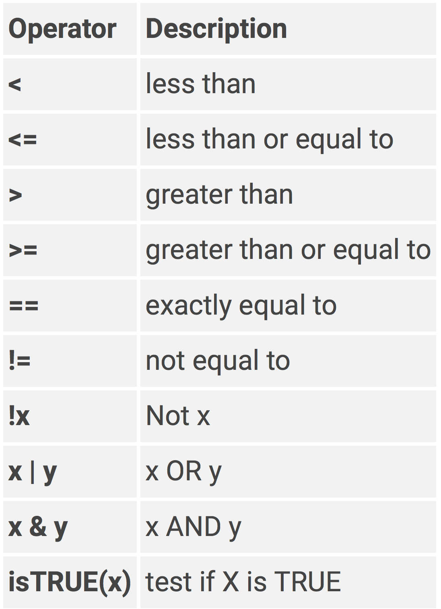

string <- "hello"
string[1] "hello"Intro to R
The main objective of this section is to get you familiar with the basics of R. This includes basic syntax, creating objects, understanding the different classes of objects, and understanding the different data structures in R.
Before starting this section, be sure to have:
📖 Read the Positron page
📝 Create a new file R_basics.R in your project folder.
In R, the variables and data you work with are called objects. Everything in R is an object. Everything you do in R is a function. In other words, everything that exists is an object and everything you do to objects are functions.
You can define an object using the assignment operator <-.
Everything on the left hand side of the <- assignment operator is an object. Everything on the right hand side of <- are functions or values. Go ahead and type the following two lines of code in your script file.
string <- "hello"
string[1] "hello"You can execute/run a line of code by placing the cursor anywhere on the line and pressing ⌘+↵ on macOS or Ctrl+↵ on Windows/Linux.
Go ahead an run the two lines of code.
In this example, the first line creates a new object called string with a value of “hello”. The second line simply prints the output of string to the Console window.
In the second line there is no assignment operator. When there is no <- this means you are essentially just printing to the console. You can’t do anything with stuff that is just printed to the console, it is just for viewing purposes.
For instance, if I wanted to calculate 1 + 2 I could do this by printing it to the console.
1 + 2[1] 3However, if I wanted to do something else with the result of that calculation then I would not be able to unless I assigned the result to an object using <-
result <- 1 + 2
result <- result * 5
result[1] 15The point is, you are almost always going to assign the result of some function or value to an object.
Printing to the console is not very useful, except for viewing the output of your code. You can’t do anything with the output unless you assign it to an object.
Almost every line of code, then, will have an object name on the left hand side of <- and a function or value on the right hand side of <- .
In the first example above, notice how I included " " around hello. This tells R that hello is a string, not an object. If I were to not include " ", then R would think I am calling an object. And since there is no object with the name hello it will print an error.
string <- helloError:
! object 'hello' not foundDo not use " " for Numerical values.
a <- "5" + "1"Error in `"5" + "1"`:
! non-numeric argument to binary operatorYou can execute lines of code by:
Typing them directly into the Console window
Typing them into the Script window and then pressing ⌘+↵ on macOS or Ctrl+↵ on Windows/Linux. This executes one line of your code at a time.
Clicking the Play ▶️ button in the top left corner of the Script window. This executes all lines of code in your script file.
It is important to know that EVERYTHING in R is case sensitive.
a <- 5
a + 5[1] 10A + 5Error:
! object 'A' not foundObjects in R have different types of values they can take on. These values are called classes. The most common classes you will encounter are:
character "hello", "19"
numeric (or double) 2, 32.55
integer 5, 99
logical TRUE, FALSE
To evaluate the class of an object you can use the typeof()
typeof(a)[1] "double"To change the class of values in an object you can use the function as.character() , as.numeric() , as.double() , as.integer() , as.logical() functions.
as.integer(a)[1] 5as.character(a)[1] "5"as.numeric("hello")[1] NAOkay so now lets talk about creating more interesting objects than just a <- 5. If you are going to do anything in R it is important that you understand the different data types and data structures you can use in R. I will not cover all of them in this tutorial. For more information on data types and structures see this nice Introduction to R
Vectors are the most basic data structure in R. A vector is a collection of elements of the same class. Vectors can be created using the c() function.
The length of a vector is the number of elements in the vector. For instance, the variable a we created earlier is actually a vector of length 1. It contains one element with a value of 5. Now let’s create a vector with more than one element.
b <- c(1, 3, 5)c() is a function. Functions contain arguments that are inputs for the function Arguments are separated by commas.
In this example the c() function concatenates the arguments (1, 3, 5) into a vector. We are passing the result of this function to the object b.
What do you think the output of b will look like?
b[1] 1 3 5You can see that we now have a vector that contains 3 elements; 1, 3, 5.
If you want to reference the value of specific elements of a vector you use brackets [ ]. For instance,
b[2][1] 3The value of the second element in vector b is 3. Let’s say we want to grab only the 2nd and 3rd elements. We can do this at least two different ways.
b[2:3][1] 3 5b[-1][1] 3 5Now, it is important to note that we have not been changing vector b. If we display the output of b, we can see that it still contains the 3 elements.
b[1] 1 3 5To update vector b we need to define b as vector b with the first element removed.
b <- b[-1]
b[1] 3 5Vector b no longer contains 3 elements. Now, let’s say we want to add an element to vector b.
c(5,b)[1] 5 3 5Here the c() function created a vector with the value 5 as the first element followed by the values in vector b. Or we can use the variable a that has a value of 5. Let’s add this to vector b.
b <- c(a,b)
b[1] 5 3 5What if you want to create a long vector with many elements? If there is a pattern to the sequence of elements in the vector then you can create the vector using seq().
seq(0, 1000, by = 4) [1] 0 4 8 12 16 20 24 28 32 36 40 44 48 52 56
[16] 60 64 68 72 76 80 84 88 92 96 100 104 108 112 116
[31] 120 124 128 132 136 140 144 148 152 156 160 164 168 172 176
[46] 180 184 188 192 196 200 204 208 212 216 220 224 228 232 236
[61] 240 244 248 252 256 260 264 268 272 276 280 284 288 292 296
[76] 300 304 308 312 316 320 324 328 332 336 340 344 348 352 356
[91] 360 364 368 372 376 380 384 388 392 396 400 404 408 412 416
[106] 420 424 428 432 436 440 444 448 452 456 460 464 468 472 476
[121] 480 484 488 492 496 500 504 508 512 516 520 524 528 532 536
[136] 540 544 548 552 556 560 564 568 572 576 580 584 588 592 596
[151] 600 604 608 612 616 620 624 628 632 636 640 644 648 652 656
[166] 660 664 668 672 676 680 684 688 692 696 700 704 708 712 716
[181] 720 724 728 732 736 740 744 748 752 756 760 764 768 772 776
[196] 780 784 788 792 796 800 804 808 812 816 820 824 828 832 836
[211] 840 844 848 852 856 860 864 868 872 876 880 884 888 892 896
[226] 900 904 908 912 916 920 924 928 932 936 940 944 948 952 956
[241] 960 964 968 972 976 980 984 988 992 996 1000Another important concept is that vectors can only contain elements of the same “class”.
d <- c(1, "2", 5, 9)
d[1] "1" "2" "5" "9"as.numeric(d)[1] 1 2 5 9Factors are special types of vectors that can represent categorical data. You can change a vector into a factor object using factor()
factor(c("male", "female", "male", "male", "female"))[1] male female male male female
Levels: female malefactor(c("high", "low", "medium", "high", "low"))[1] high low medium high low
Levels: high low mediumf <- factor(c("high", "low", "medium", "high", "low"),
levels = c("high", "medium", "low"))
f[1] high low medium high low
Levels: high medium lowLists are containers of objects. Unlike vectors, Lists can hold different classes of objects.
list(1, "2", 2, 4, 9, "hello")[[1]]
[1] 1
[[2]]
[1] "2"
[[3]]
[1] 2
[[4]]
[1] 4
[[5]]
[1] 9
[[6]]
[1] "hello"You might have noticed that there are not only single brackets, but double brackets [[ ]] in the output.
This is because Lists can hold not only single elements but can hold vectors, factors, lists, data frames, and pretty much any kind of object.
l <- list(c(1,2,3,4), "2", "hello", c("a", "b", "c"))
l[[1]]
[1] 1 2 3 4
[[2]]
[1] "2"
[[3]]
[1] "hello"
[[4]]
[1] "a" "b" "c"You can see that the length of each element in a list does not have to be the same. To reference the elements in a list you need to use the double brackets [[ ]].
l[[1]][1] 1 2 3 4To reference elements within list elements you use double brackets followed by a single bracket.
l[[4]][2][1] "b"You can even give names to the list elements,
person <- list(name = "Jason",
phone = "123-456-7890",
age = 23,
favorite_colors = c("blue", "red", "brown"))
person$name
[1] "Jason"
$phone
[1] "123-456-7890"
$age
[1] 23
$favorite_colors
[1] "blue" "red" "brown"And you can use the names to reference elements in a list
person[["name"]][1] "Jason"person[["favorite_colors"]][3][1] "brown"Data frames are a type of data structure in R that is used to store tabular data. They are similar to a spreadsheet or a database table.
So let’s create a data frame so you can see what one looks like in R.
data <- data.frame(id = 1:10,
x = c("a", "b"),
y = seq(10,100, by = 10))
data id x y
1 1 a 10
2 2 b 20
3 3 a 30
4 4 b 40
5 5 a 50
6 6 b 60
7 7 a 70
8 8 b 80
9 9 a 90
10 10 b 100You can see that the data frame has 10 rows and 3 columns. The first column is labeled id and contains the numbers 1 through 10. The second column is labeled x and contains the values “a” and “b”. The third column is labeled y and contains the values 10, 20, 30, …, 100.
You can view the Data Frame by clicking on the object in the SESSION window or by executing the command View(data).
You can use the $ notation to reference just one of the columns in the data frame,
data$y [1] 10 20 30 40 50 60 70 80 90 100Alternatively you can use,
data["y"] y
1 10
2 20
3 30
4 40
5 50
6 60
7 70
8 80
9 90
10 100To reference only certain rows within a column,
data$y[1:5][1] 10 20 30 40 50data[1:5,"y"][1] 10 20 30 40 50If…then statements are useful for when you need to execute code only if a certain statement is TRUE.
First we need to know how to perform logical operations in R.

Okay, we have this variable a.
a <- 5Now let’s say we want to determine if the value of a is greater than 3
a > 3[1] TRUEYou can see that the output of this statement a > 3 is TRUE
Now let’s write an if…then statement. If a is greater than 3, then multiply a by 2.
if (a > 3) {
a <- a*2
}
a[1] 10The logical expression that is being tested is contained in parentheses, right after the if. If this logical expression is evaluated as TRUE then it will perform the next line(s) of code. The { is just a way of encasing multiple lines of code within one if statement. The lines of code then need to be closed of with }. In this case, since we only had one line of code a <- a*2 we could have just written it as.
if (a > 3) a <- a*2What if we want to do something to a if a is NOT greater than 3? In other words… if a is greater than 3, then multiple a by 2 else set a to missing
a <- 5
if (a > 3) {
a <- a*2
} else {
a <- NA
}
a[1] 10You can keep on chaining if…then…else…if…then statements together.
a <- 5
if (is.na(a)) {
print("Missing Value")
} else if (a < 0) {
print("A is less than 0")
} else if (a > 3) {
print("A is greater than 3")
}[1] "A is greater than 3"For additional tips in the basics of coding R see:
https://ramnathv.github.io/pycon2014-r/visualize/README.html
https://www.datacamp.com/courses/free-introduction-to-r/?tap_a=5644-dce66f&tap_s=10907-287229